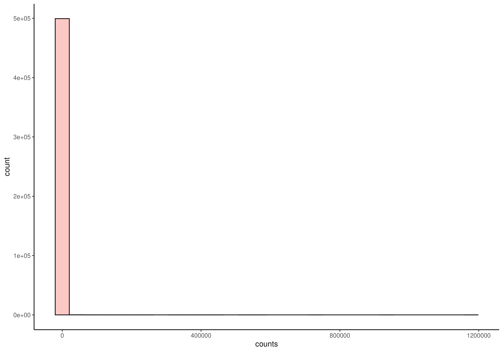
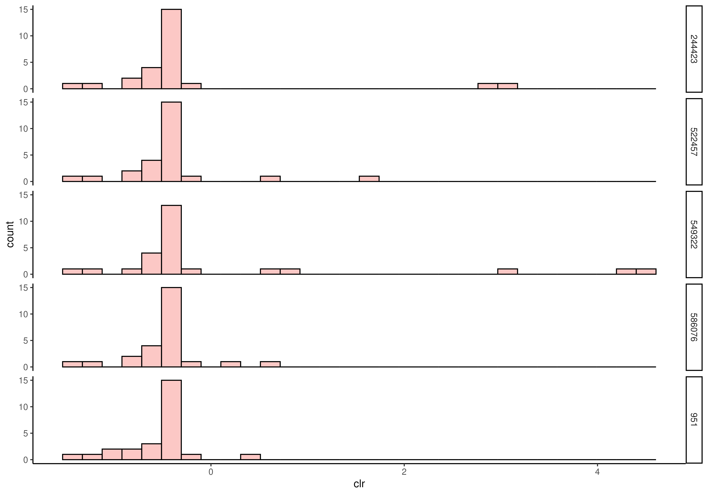
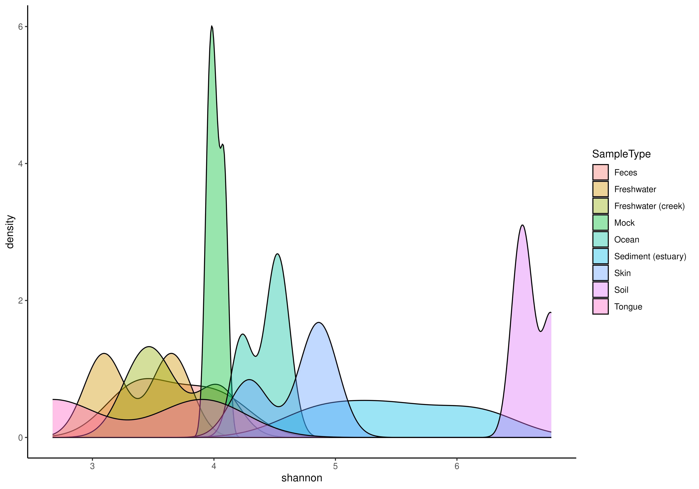
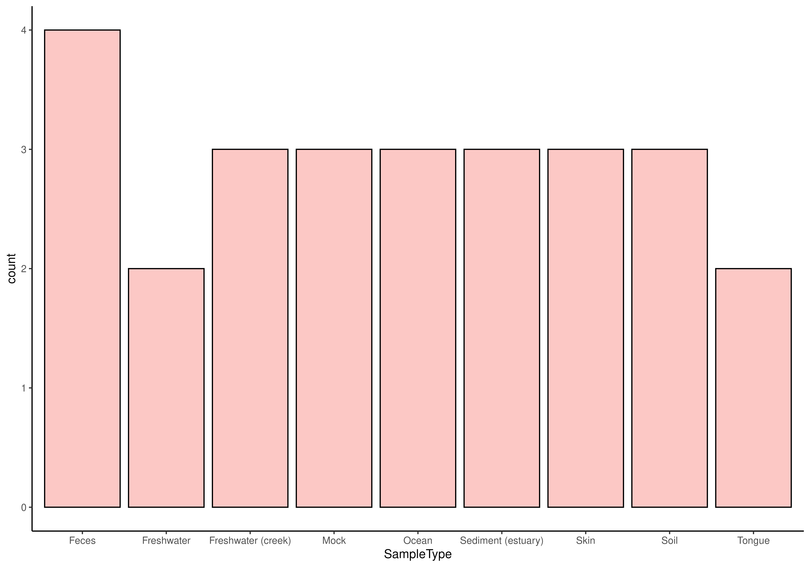

assay, rowData or colDataR/AllGenerics.R, R/plotHistogram.R
plotHistogram.RdThis methods visualizes abundances or variables from rowData or
colData.
plotHistogram(x, ...)
plotBarplot(x, ...)
# S4 method for class 'SummarizedExperiment'
plotHistogram(
x,
assay.type = NULL,
features = NULL,
row.var = NULL,
col.var = NULL,
...
)
# S4 method for class 'SummarizedExperiment'
plotBarplot(
x,
assay.type = NULL,
features = NULL,
row.var = NULL,
col.var = NULL,
...
)a
SummarizedExperiment
object.
Additional parameters for plotting.
layout: Character scalar. Specifies the layout of plot.
Must be either "histogram" or "density".
(Default: "histogram")
facet.by: Character vector. Specifies variables from
colData(x) or rowData(x) used for facetting.
(Default: NULL)
fill.by: Character scalar. Specifies variable from
colData(x) or rowData(x) used for coloring.
(Default: NULL)
NULL or character scalar. Specifies the
abundace table to plot. (Default: NULL)
NULL or character vector. If assay.type
is specified, this specifies rows to visualize in different facets. If
NULL, whole data is visualized as a whole. (Default: NULL)
NULL or character vector. Specifies a variable
from rowData(x) to visualize. (Default: NULL)
NULL or character vector Specifies a variable
from colData(x) to visualize. (Default: NULL)
A ggplot2 object.
Histogram and bar plot are a basic visualization techniques in quality
control. It helps to visualize the distribution of data. plotAbundance
allows researcher to visualise the abundance from assay, or variables
from rowData or colData. For visualizing categorical values,
one can utilize plotBarplot.
plotAbundanceDensity function is related
to plotHistogram. However, the former visualizes the most prevalent
features, while the latter can be used more freely to explore the
distributions.
data(GlobalPatterns)
tse <- GlobalPatterns
# Visualize the counts data. There are lots of zeroes.
plotHistogram(tse, assay.type = "counts")
#> `stat_bin()` using `bins = 30`. Pick better value with `binwidth`.

# Apply transformation
tse <- transformAssay(tse, method = "clr", pseudocount = TRUE)
#> A pseudocount of 0.5 was applied.
# And plot specified rows
plotHistogram(
tse,
assay.type = "clr",
features = rownames(tse)[1:5],
facet.by = "rownames"
)
#> `stat_bin()` using `bins = 30`. Pick better value with `binwidth`.

# Calculate shannon diversity and visualize its distribution with density
# plot. Different sample types are separated with color.
tse <- addAlpha(tse, index = "shannon")
plotHistogram(
tse,
col.var = "shannon",
layout = "density",
fill.by = "SampleType"
)

# For categorical values, one can utilize a bar plot
plotBarplot(tse, col.var = "SampleType")
